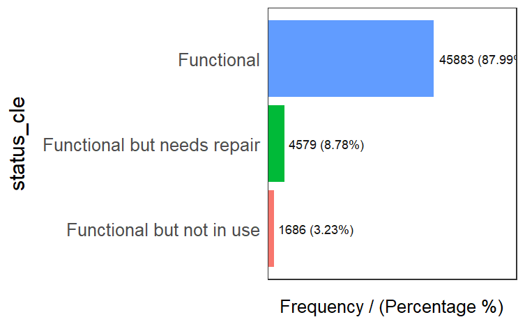
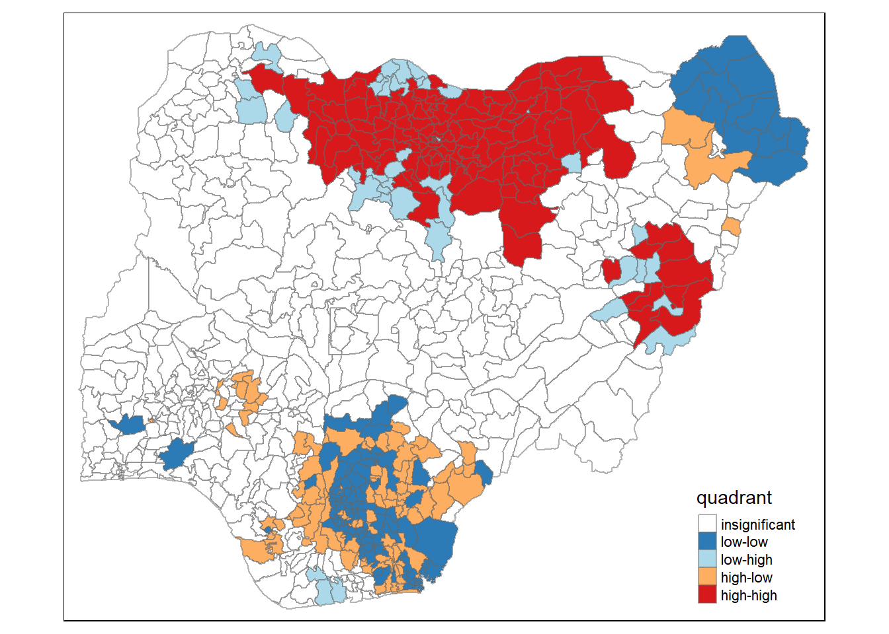

pacman::p_load(sf,tidyverse,tmap,spdep,funModeling,knitr)Take Home Exercise 1
Geospatial Analysis for Water Points in Nigeria
Background of the analysis
Water is the source of life on the Earth. Clean and accessible water is particularly critical for human life. Yet over 40% of the global population does not have access to sufficient clean water. Scarcity of water supply is a intractable problem to be solved in the world.
Objectives
The main aim of this project is to use water point related data from rural areas at the water point or small water scheme level and share the data via WPdx Data Repository. In order to address this complex problem, we focus on Nigeria as a study case and analyse the spatial distribution attributes of Not Functional Water Point in this project.
1. Data used
The data used in this project consists of two types:
aspatial data from WPdx Global Data Repositories
geospatial data of Nigeria Level-2 Administrative Boundary (also known as Local Government Area) polygon features GIS data.
2. Packages used
In this project, packages below are used to facilitate our analysis.
sf
tidyverse
tamp
spdep
funModeling
knitr
3. Importing data into R environment
The data belonging to Nigeria should be extracted from the shapefiles geo_export. We use Projected Coordinate System whose identifier of EPSG is 26391, so the crs = 26391. The function st_read of sf package is used to save the data in a simple feature data table. The data has been filtered when downloaded so no filter by Nigeria will be used here.
wp <- st_read(dsn = "geodata",
layer = "geo_export",
crs = 26391)From the description above,
the data has 95008 features and 72 fields
Geometry type is POINT
Coordinate system is Projected System Minna/Nigeria west Belt
Then we upload the extracted tidy data table into the data file geodata.
write_rds(wp,"geodata/wp_nga.rds")Now we import Nigeria LGA boundary data into R environment using the same function, and also extract Projected Coordinate System to match the water point data.
nga <- st_read(dsn = "geodata",
layer = "geoBoundaries-NGA-ADM2",
crs = 26391)From the description above,
Geometry type of the data is MULTIPOLYGON
Coordinate system is Projected System Minna/Nigeria west Belt
4. Data Wrangling
4.1 Data Issues
4,1,1 Missing Value Check
First let us check if there are missing values in the extracted data tables.
summary(nga[rowSums(is.na(nga))!=0,])As we can see the summary information above, there is no missing value in LGA boundary data.
summary(wp[rowSums(is.na(wp))!=0,])As we can see from information above, there are so many missing values in the water point data. For example, there are 94994 missing values in clean_adm4, 46891 missing values in install_ye, and so on.
4.1.2 Recoding Missing Values into Strings
Next, we recode these missing values of status_cle, which we will use in the subsequent analysis into “Unknown” to proceed our analysis.
wp_nga <- read_rds("geodata/wp_nga.rds") %>%
mutate(status_cle = replace_na(status_cle, "Unknown"))4.2 Data Processing
4.2.1 Glimpse The Data Tables
We take a check at our data tables with glimpse() of dplyr package.
glimpse(nga)We can see that the table has 774 rows and 6 columns, which are in character and multipolygon classes.
shapename
Level
shapeID
shapeGroup
shapeType
geometry.
glimpse(wp_nga)
We can see that the table has 95008 rows and 73 columns.
Then let us have a quick look at the geometry of the geospatioal data by using plot() and st_geometry() of sf package.
plot(st_geometry(nga))4.2.2 Distribution of The Data in status_cle Field
Then we can display the distribution of the data in status_cle field using freq().
freq(data=wp_nga,
input = 'status_cle')From the hist graph, it is shown that Functional Water Point takes the most portion of 48.29 % within the status_cle field. Next is Non-Functional Water Point, our objective analysed in this project, which takes 30.93% in the field.
4.2.3 Points in Polygons
We first extract Functional water point, on which we focus to analyse, from the whole status_cle field, and write the simple feature data table into rds files.
wpt_functional <- wp_nga %>%
filter(status_cle %in%
c("Functional",
"Functional but needs repair",
"Functional but not in use"))We can check the proportion of each attribute in Functional Water Point as shown below.
freq(data=wpt_functional,
input = 'status_cle')
We then extract Non-Functional water point from the whole status_cle field, and write the simple feature data table into rds files.
wpt_nonfunctional <- wp_nga %>%
filter(status_cle %in%
c("Abandoned/Decommissioned",
"Abandoned",
"Non-Functional",
"Non functional due to dry season",
"Non-Functional due to dry season"))We can check the proportion of each attribute in Non-Functional Water Point as shown below.
freq(data=wpt_nonfunctional,
input = 'status_cle')Now we count the number of Total, Functional and Non-Functional water points at LGA level using st_intersects().
FC<- lengths(st_intersects(nga, wpt_nonfunctional))
NFC<- lengths(st_intersects(nga, wpt_functional))
TL<-lengths(st_intersects(nga, wp_nga))We merge the count of Total Water Point, Functional Water Point and Non-Functional Water Point in polygons with LGA data table nga as nga_wp.
nga_wp <- nga %>%
mutate(`total wpt` = TL) %>%
mutate(`wpt functional` = FC) %>%
mutate(`wpt non-functional` = NFC)Then we calculate the portion of numbers of functional and non-functional water points in each polygon, and merge it with nga data table.
nga_wp <- nga_wp %>%
mutate(pct_functional = `wpt functional`/`total wpt`) %>%
mutate(`pct_non-functional` = `wpt non-functional`/`total wpt`)Now we save the data table into rds format with the chunk below. And delete other raw data.
write_rds(nga_wp, "geodata/nga_wp.rds")5. Geospatial Analysis
5.1 Visualizing Water Point Indicator
Now we can visualize the distributions of proportions of Functional and Non-Functional water point using ggplot2 package.
nga_wp <- read_rds("geodata/nga_wp.rds")
ggplot(data=nga_wp,
aes(x= as.numeric(`pct_non-functional`)))+
geom_histogram(bins=20,
color="black",
fill="light blue") +
labs(title = "Are non-functional water points even distributed in Nigeria?",
x = "Non-Functional Water Points Proportion",
y = "Frequency")
We can see that the distribution of percentage of non-functional water point is similar to normal distribution, with little skewness.
Now, we are going to prepare a basemap and a choropleth map showing the distribution of Non-Functional water point by using qtm() of tmap package.
equal <- tm_shape(nga_wp) +
tm_fill("wpt non-functional",
n = 5,
style = "equal") +
tm_borders(alpha = 0.5) +
tm_layout(main.title = "Equal interval classification",
legend.outside = TRUE,
legend.height = 0.45,
legend.width = 5.0,
legend.position = c("right", "bottom"),
frame = FALSE)
quantile <- tm_shape(nga_wp) +
tm_fill("wpt non-functional",
n = 5,
style = "quantile") +
tm_borders(alpha = 0.5) +
tm_layout(main.title = "Equal quantile classification",
legend.outside = TRUE,
legend.height = 0.45,
legend.width = 5.0,
legend.position = c("right", "bottom"),
frame = FALSE)
tmap_arrange(equal,
quantile,
asp=1,
ncol=2)
6 Global Spatial Autocorrelation
Before we can compute the global spatial autocorrelation statistics, we need to construct a spatial weights of the study area. The polygon contiguity method is effective when polygons are similar in size and distribution, and when spatial relationships are a function of polygon proximity.
The fixed distance method works well for point data. It is often a good option for polygon data when there is a large variation in polygon size. Because we have had a quick look at the geometry, the variation in polygon size is quite large, and the distribution of the indicator is not largely skewed, so we choose fixed distance matrix.
6.1 Computing Contiguity Based on Fixed Distance
6.1.1 Determine the cut-off distance
To get our longitude values we map the st_centroid function over the geometry column of us.bound and access the longitude value through double bracket notation [[]] and 1. This allows us to get only the longitude, which is the first value in each centroid.
longitude <- map_dbl(nga_wp$geometry, ~st_centroid(.x)[[1]])
latitude <- map_dbl(nga_wp$geometry, ~st_centroid(.x)[[2]])
coords <- cbind(longitude, latitude)
head(coords) longitude latitude
[1,] 7.372450 5.113107
[2,] 7.352131 5.083219
[3,] 13.322900 13.428835
[4,] 6.847325 8.825812
[5,] 7.771541 5.022061
[6,] 8.219654 6.259845Then, we need to determine the upper limit for distance band by using the steps below:
Return a matrix with the indices of points belonging to the set of the k nearest neighbours of each other by using knearneigh() of spdep.
Convert the knn object returned by knearneigh() into a neighbours list of class nb with a list of integer vectors containing neighbour region number ids by using knn2nb().
Return the length of neighbour relationship edges by using nbdists() of spdep. The function returns in the units of the coordinates if the coordinates are projected, in km otherwise.
Remove the list structure of the returned object by using unlist().
k1 <- knn2nb(knearneigh(coords))
k1dists <- unlist(nbdists(k1, coords, longlat = TRUE))
summary(k1dists) Min. 1st Qu. Median Mean 3rd Qu. Max.
2.662 12.815 20.242 22.031 27.706 71.661 The summary report shows that the largest nearest neighbour distance is 71.661 km, and the least nearest neighbour distance is 2.662 km, so using this as the upper threshold gives certainty that all units will have at least one neighbour.
6.1.2 Computing fixed distance weight matrix
Now, we will compute the distance weight matrix by using dnearneigh() as shown in the code chunk below.
wm_d72 <- dnearneigh(coords, 0, 72, longlat = TRUE)
wm_d72Neighbour list object:
Number of regions: 774
Number of nonzero links: 18112
Percentage nonzero weights: 3.023323
Average number of links: 23.40052 We can display the content of the matrix by using str().
str(wm_d72)List of 774
$ : int [1:63] 2 5 10 25 55 66 68 103 122 181 ...
$ : int [1:62] 1 5 10 25 55 66 68 103 122 181 ...
$ : int [1:2] 261 447
$ : int [1:10] 12 20 257 263 446 454 466 641 690 695
$ : int [1:56] 1 2 55 66 104 136 137 169 184 202 ...
$ : int [1:21] 9 14 18 19 56 170 217 218 330 337 ...
$ : int [1:19] 8 15 22 176 177 214 281 282 283 295 ...
$ : int [1:32] 7 15 22 49 176 177 214 275 276 277 ...
$ : int [1:26] 6 18 19 56 66 77 103 104 217 218 ...
$ : int [1:63] 1 2 23 25 66 103 181 191 203 204 ...
$ : int [1:22] 26 27 43 68 126 157 190 191 204 336 ...
$ : int [1:11] 4 135 257 263 401 417 429 446 454 690 ...
$ : int [1:13] 31 37 38 40 94 211 320 393 436 471 ...
$ : int [1:24] 6 170 193 194 195 217 309 310 311 362 ...
$ : int [1:27] 7 8 22 32 49 51 62 82 176 177 ...
$ : int [1:37] 30 38 39 41 44 45 70 71 120 124 ...
$ : int [1:34] 28 29 35 72 172 173 178 179 182 275 ...
$ : int [1:29] 6 9 19 56 66 77 103 104 217 218 ...
$ : int [1:41] 6 9 18 25 56 66 77 103 104 181 ...
$ : int [1:7] 4 106 239 263 419 454 466
$ : int [1:9] 60 61 162 269 484 520 578 596 626
$ : int [1:31] 7 8 15 32 49 51 62 82 176 177 ...
$ : int [1:64] 10 25 52 53 54 56 58 77 78 79 ...
$ : int [1:5] 123 476 527 673 761
$ : int [1:68] 1 2 10 19 23 54 56 66 77 103 ...
$ : int [1:30] 11 27 43 68 157 190 191 204 336 370 ...
$ : int [1:24] 11 26 43 68 157 191 204 336 370 371 ...
$ : int [1:43] 17 29 35 70 71 124 172 173 178 179 ...
$ : int [1:45] 17 28 35 70 71 124 172 173 178 179 ...
$ : int [1:30] 16 38 39 40 41 44 45 175 185 186 ...
$ : int [1:13] 13 37 94 158 210 211 212 289 308 561 ...
$ : int [1:28] 15 22 49 51 62 82 177 196 207 214 ...
$ : int [1:29] 47 111 130 142 145 155 166 219 227 233 ...
$ : int [1:11] 42 86 104 136 137 213 375 553 559 733 ...
$ : int [1:32] 17 28 29 172 173 178 179 182 275 276 ...
$ : int [1:8] 50 107 247 408 432 455 681 759
$ : int [1:21] 13 31 38 39 40 41 186 192 197 198 ...
$ : int [1:25] 13 16 30 37 39 40 41 44 186 192 ...
$ : int [1:27] 16 30 37 38 40 41 44 185 186 192 ...
$ : int [1:21] 13 30 37 38 39 41 44 186 192 211 ...
$ : int [1:22] 16 30 37 38 39 40 44 45 186 192 ...
$ : int [1:20] 34 86 136 137 184 202 285 286 375 499 ...
$ : int [1:19] 11 26 27 68 122 126 157 190 191 246 ...
$ : int [1:27] 16 30 38 39 40 41 45 70 175 186 ...
$ : int [1:27] 16 30 41 44 70 175 187 188 192 290 ...
$ : int [1:12] 119 380 387 417 423 429 438 459 521 656 ...
$ : int [1:24] 33 111 127 130 155 166 227 234 238 242 ...
$ : int [1:12] 64 65 74 113 131 265 386 407 428 482 ...
$ : int [1:30] 8 15 22 32 51 62 82 176 177 207 ...
$ : int [1:4] 36 107 409 432
$ : int [1:27] 15 22 32 49 62 82 177 207 214 284 ...
$ : int [1:47] 23 53 54 57 58 77 78 79 80 165 ...
$ : int [1:37] 23 52 54 57 58 78 79 80 165 189 ...
$ : int [1:58] 23 25 52 53 56 57 58 77 78 79 ...
$ : int [1:33] 1 2 5 68 122 157 169 184 190 208 ...
$ : int [1:51] 6 9 18 19 23 25 54 66 77 78 ...
$ : int [1:34] 52 53 54 58 78 79 80 165 189 197 ...
$ : int [1:37] 23 52 53 54 57 78 79 165 189 197 ...
$ : int [1:5] 128 129 493 700 748
$ : int [1:14] 21 61 158 269 310 311 561 563 578 589 ...
$ : int [1:11] 21 60 162 268 269 484 578 589 592 596 ...
$ : int [1:28] 15 22 32 49 51 82 177 196 207 214 ...
$ : int [1:5] 384 416 467 765 772
$ : int [1:7] 48 65 74 113 131 265 407
$ : int [1:11] 48 64 74 109 113 265 386 407 683 701 ...
$ : int [1:47] 1 2 5 9 10 18 19 25 56 103 ...
$ : int [1:25] 72 120 124 179 182 304 305 346 347 348 ...
$ : int [1:30] 1 2 11 26 27 43 55 122 157 190 ...
$ : int [1:8] 140 146 248 274 473 500 512 513
$ : int [1:44] 16 28 29 44 45 71 120 124 172 173 ...
$ : int [1:49] 16 28 29 70 120 124 172 173 175 178 ...
$ : int [1:18] 17 67 182 361 374 378 404 566 567 568 ...
$ : int [1:6] 361 374 377 404 665 666
$ : int [1:14] 48 64 65 109 113 116 251 265 672 683 ...
$ : int [1:15] 110 229 255 258 272 373 382 398 422 433 ...
$ : int [1:9] 254 287 427 459 470 547 647 677 751
$ : int [1:55] 9 18 19 23 25 52 54 56 78 79 ...
$ : int [1:51] 23 52 53 54 56 57 58 77 79 80 ...
$ : int [1:57] 23 52 53 54 56 57 58 77 78 80 ...
$ : int [1:39] 23 52 53 54 57 77 78 79 165 189 ...
$ : int [1:19] 99 145 227 233 242 255 270 426 449 483 ...
$ : int [1:21] 15 22 32 49 51 62 177 207 214 297 ...
$ : int [1:6] 132 258 383 414 529 767
$ : int [1:3] 148 437 692
$ : int [1:38] 101 105 130 142 145 155 156 219 235 242 ...
$ : int [1:17] 34 42 136 137 184 202 285 286 499 538 ...
$ : int [1:19] 147 149 151 221 226 245 267 399 410 415 ...
$ : int [1:5] 150 489 648 700 714
$ : int [1:12] 100 107 159 260 408 458 463 542 674 676 ...
$ : int 237
$ : int [1:3] 160 271 406
$ : int [1:11] 95 119 390 391 392 423 487 642 656 668 ...
$ : int [1:3] 354 607 665
$ : int [1:7] 13 31 158 436 561 596 709
$ : int [1:10] 92 390 391 392 405 423 469 656 708 770
$ : int [1:17] 97 108 139 167 168 350 389 403 412 420 ...
$ : int [1:13] 96 108 114 139 147 168 389 403 420 451 ...
$ : int [1:4] 153 231 432 696
$ : int [1:18] 81 145 154 167 227 233 255 270 426 449 ...
[list output truncated]
- attr(*, "class")= chr "nb"
- attr(*, "region.id")= chr [1:774] "1" "2" "3" "4" ...
- attr(*, "call")= language dnearneigh(x = coords, d1 = 0, d2 = 72, longlat = TRUE)
- attr(*, "dnn")= num [1:2] 0 72
- attr(*, "bounds")= chr [1:2] "GE" "LE"
- attr(*, "nbtype")= chr "distance"
- attr(*, "sym")= logi TRUE6.1.3 Plotting distance based neighbours
Let us now plot the weight matrix using the code chunk below.
plot(nga_wp$geometry, border="lightgrey")
plot(wm_d72,add=TRUE, coords)
plot(k1, coords, add=TRUE, col="red", length=0.08)The red lines show the links of 1st nearest neighbours and the black lines show the links of neighbours within the cut-off distance of 72km.
Next, we need to assign weights to each neighboring polygon based both on Fixed Distance. In our case, each neighboring polygon will be assigned equal weight (style=“W”).
rswm_f <- nb2listw(wm_d72,
style="W",
zero.policy = TRUE)
print(rswm_f, zero.policy = TRUE)Characteristics of weights list object:
Neighbour list object:
Number of regions: 774
Number of nonzero links: 18112
Percentage nonzero weights: 3.023323
Average number of links: 23.40052
Weights style: W
Weights constants summary:
n nn S0 S1 S2
W 774 599076 774 129.7549 3127.0646.2 Global Spatial Autocorrelation Test
The Null Hypothesis for Spatial Randomness:
Observed spatial pattern of values is equally likely as any other spatial pattern.
Values at one location do not depend on values at other (neighbouring) locations.
Under spatial randomness, the location of values may be altered without affecting the information content of the data.
We mainly have two methods to test the teospatial global autocorrelation.
Moran’s I Test
Geary’s C Test
6.2.1 Moran’s I Test
As the snippet shows, there are some percentage becomes NaN because the total wpt is 0. We should recode these NA as 0.
nga_wp <- nga_wp %>%
mutate(pct_functional = replace_na(pct_functional,0))%>%
mutate(`pct_non-functional`=replace_na(`pct_non-functional`,0))
write_rds(nga_wp,"geodata/nga_wp.rds")The code chunk below performs Moran’s I statistical testing using moran.test() of spdep.
moran.test(nga_wp$`pct_non-functional`,
listw=rswm_f,
zero.policy = TRUE,
na.action=na.omit)
Moran I test under randomisation
data: nga_wp$`pct_non-functional`
weights: rswm_f
Moran I statistic standard deviate = 33.537, p-value < 2.2e-16
alternative hypothesis: greater
sample estimates:
Moran I statistic Expectation Variance
0.4885731483 -0.0012936611 0.0002133515 From the summary of the test result, we can see that the p-value is less than 0.05, which means we have evident reasons to reject the Null Hypothesis that the percentage of Non-Functional water point is randomly distributed across the country.
6.2.2 Computing Monte Carlo Moran’s I
We already get the result of the Moran’s I Test, but we can confirm the test by simulating Monte Carlo.
set.seed(1234)
bperm= moran.mc(nga_wp$`pct_non-functional`,
listw=rswm_f,
nsim=999,
zero.policy = TRUE,
na.action=na.omit)
bperm
Monte-Carlo simulation of Moran I
data: nga_wp$`pct_non-functional`
weights: rswm_f
number of simulations + 1: 1000
statistic = 0.48857, observed rank = 1000, p-value = 0.001
alternative hypothesis: greaterFrom the summary of the test result, we can see that the p-value is 0.001, still less than 0.05, which means we have evident reasons to reject the Null Hypothesis that the percentage of Non-Functional water point is randomly distributed across the country. And the statistic = 0.48857 >0. For the I statistic, if it is positive (I>0): Clustered, observations tend to be similar.
6.2.3 Geary’s C Test
The code chunk below performs Geary’s C test for spatial autocorrelation by using geary.test() of spdep.
Now we can do the Geary’s C test:
geary.test(nga_wp$`pct_non-functional`, listw=rswm_f, zero.policy = TRUE)
Geary C test under randomisation
data: nga_wp$`pct_non-functional`
weights: rswm_f
Geary C statistic standard deviate = 32.308, p-value < 2.2e-16
alternative hypothesis: Expectation greater than statistic
sample estimates:
Geary C statistic Expectation Variance
0.5091973810 1.0000000000 0.0002307798 From the summary of the test result, we can see that the p-value is less than 0.05, which means we have evident reasons to reject the Null Hypothesis that the percentage of Non-Functional water point is randomly distributed across the country. The Geary C statistic = 0.5091973810 < 1.
6.2.4 Computing Monte Carlo Geary’s C
The code chunk below performs permutation test for Geary’s C statistic by using geary.mc() of spdep.
set.seed(1234)
bperm=geary.mc(nga_wp$`pct_non-functional`,
listw=rswm_f, zero.policy = TRUE,
nsim=999)
bperm
Monte-Carlo simulation of Geary C
data: nga_wp$`pct_non-functional`
weights: rswm_f
number of simulations + 1: 1000
statistic = 0.5092, observed rank = 1, p-value = 0.001
alternative hypothesis: greaterFrom the summary of the test result, we can see that the p-value is 0.001, still less than 0.05, which means we have evident reasons to reject the Null Hypothesis that the percentage of Non-Functional water point is randomly distributed across the country. And the statistic = 0.5092 < 1. For the c statistic, if it is Small c value (<1) : Clustered, observations tend to be similar.
6.3 Clusters and Outliers Analysis
6.3.1 Computing local Moran’s I
The code chunks below are used to compute local Moran’s I of pct_non-functional at the ADM2 level.
fips <- order(nga_wp$shapeName)
localMI <- localmoran(nga_wp$`pct_non-functional`, rswm_f,zero.policy = TRUE)
head(localMI) Ii E.Ii Var.Ii Z.Ii Pr(z != E(Ii))
1 0.12294172 -1.660246e-04 0.0018756062 2.842592 4.474830e-03
2 0.12080225 -1.789636e-04 0.0020572566 2.667311 7.646083e-03
3 4.24438429 -5.490795e-03 2.1105325510 2.925366 3.440518e-03
4 -0.13148405 -1.991603e-04 0.0152322650 -1.063733 2.874498e-01
5 0.05500367 -8.206875e-06 0.0001053487 5.359718 8.335186e-08
6 0.30571432 -4.743753e-04 0.0170230816 2.346767 1.893707e-02localmoran() function returns a matrix of values whose columns are:
Ii: the local Moran’s I statistics
E.Ii: the expectation of local moran statistic under the randomisation hypothesis
Var.Ii: the variance of local moran statistic under the randomisation hypothesis
Z.Ii:the standard deviate of local moran statistic
Pr(): the p-value of local moran statistic
6.3.2 Mapping the local Moran’s I
Before mapping the local Moran’s I map, it is wise to append the local Moran’s I dataframe (i.e. localMI) onto nga_wp SpatialPolygonDataFrame. The code chunks below can be used to perform the task. The out SpatialPolygonDataFrame is called nga_wp.localMI.
nga.localMI <- cbind(nga_wp,localMI)%>%
rename(Pr.Ii = Pr.z....E.Ii..)tm_shape(nga.localMI) +
tm_fill(col = "Ii",
style = "pretty",
palette = "RdBu",
title = "local moran statistics") +
tm_borders(alpha = 0.5) +
tm_layout(legend.outside = TRUE,
legend.height = 0.45,
legend.width = 5.0,
legend.position = c("right", "bottom"),
frame = FALSE)The plot above shows that the regions of the top right of the country in blue has the most positive clusters, meaning percentage of non-functional water points in these regions are quite similar. Regions in pink have negative correlations, meaning percentage of non-functional water points in these regions are quite discrete.
6.3.3 Mapping the local Moran’s p-values
The choropleth shows there is evidence for both positive and negative Ii values. However, it is useful to consider the p-values for each of these values, as consider above.
tm_shape(nga.localMI) +
tm_fill(col = "Pr.Ii",
breaks=c(-Inf, 0.001, 0.01, 0.05, 0.1, Inf),
palette="-Blues",
title = "local Moran's I p-values") +
tm_borders(alpha = 0.5) +
tm_layout(legend.outside = TRUE,
legend.height = 0.45,
legend.width = 5.0,
legend.position = c("right", "bottom"),
frame = FALSE)The figure above shows clearly regions having distinct cluster or outlier patterns, instead of randomly distributed one. Regions in more deep color, the cluster or outlier pattern is more significant.
6.3.4 Creating a LISA Cluster Map
The LISA Cluster Map shows the significant locations color coded by type of spatial autocorrelation. The first step before we can generate the LISA cluster map is to plot the Moran scatterplot.
6.3.4.1 Plotting Moran scatterplot
nci<- moran.plot(nga_wp$`pct_non-functional`, rswm_f,
labels=as.character(nga_wp$shapeName),
zero.policy = TRUE,
xlab="Pct non-functional",
ylab="Sptially Lag Pct non-functional")Notice that the plot is split in 4 quadrants. The top right corner belongs to areas that have high percentage of non-functional water point and are surrounded by other areas that have the average level of pct_non-functional, i.e. the high-high locations.
6.3.4.2 Plotting Moran scatterplot with standardised variable
First we will use scale() to centers and scales the variable. Here centering is done by subtracting the mean (omitting NAs) the corresponding columns, and scaling is done by dividing the (centered) variable by their standard deviations.
nga_wp$z.pctnon <- scale(nga_wp$`pct_non-functional`) %>%
as.vector Now, we are ready to plot the Moran scatterplot again by using the code chunk below.
nci2 <- moran.plot(nga_wp$z.pctnon, rswm_f,
labels=as.character(nga_wp$shapeName),
zero.policy = TRUE,
xlab="Pct non-functional",
ylab="Sptially Lag Pct non-functional")
6.3.4.3 Preparing LISA map classes
The code chunks below show the steps to prepare a LISA cluster map.
quadrant <- vector(mode="numeric",length=nrow(localMI))Next, derives the spatially lagged variable (pct_non-functional) and centers the spatially lagged variable around its mean.
nga_wp$lag_pctnon <- lag.listw(rswm_f, nga_wp$`pct_non-functional`,zero.policy = TRUE)
DV <- nga_wp$lag_pctnon - mean(nga_wp$lag_pctnon) This is follow by centering the local Moran’s around the mean.
LM_I <- localMI[,1] - mean(localMI[,1]) We will set a statistical significance level as 95% for the local Moran.
signif <- 0.05 These four command lines define the low-low (1), low-high (2), high-low (3) and high-high (4) categories.
quadrant[DV <0 & LM_I>0] <- 1
quadrant[DV >0 & LM_I<0] <- 2
quadrant[DV <0 & LM_I<0] <- 3
quadrant[DV >0 & LM_I>0] <- 4 Lastly, places non-significant Moran in the category 0.
quadrant[localMI[,5]>signif] <- 06.3.5 Plotting LISA map
Now, we can build the LISA map by using the code chunks below.
nga.localMI$quadrant <- quadrant
colors <- c("#ffffff", "#2c7bb6", "#abd9e9", "#fdae61", "#d7191c")
clusters <- c("insignificant", "low-low", "low-high", "high-low", "high-high")
tm_shape(nga.localMI) +
tm_fill(col = "quadrant",
style = "cat",
palette = colors[c(sort(unique(quadrant)))+1],
labels = clusters[c(sort(unique(quadrant)))+1],
popup.vars = c("")) +
tm_view(set.zoom.limits = c(11,17)) +
tm_borders(alpha=0.5)
The map above shows that percentages of non-functional water points in areas in red are high and clustered; percentages in deep blue are low and sparsed; percentages in light blue are low outliers among high neighbours; percentages in orange are high outliers among low neighbours.
7. Hot Spot and Cold Spot Area Analysis
Beside detecting cluster and outliers, localised spatial statistics can be also used to detect hot spot and/or cold spot areas. Spatial statistics to detect spatial anomalies is the Getis and Ord’s G-statistics
The analysis consists of three steps:
Deriving spatial weight matrix
Computing Gi statistics
Mapping Gi statistics
7.1 Gi statistics using fixed distance
First, nb2listw() is used to convert the nb object into spatial weights object. Because we produce wm_d72 with style-“W”, we still use W to convert the object.
wm72_lw <- nb2listw(wm_d72, style = 'W')
summary(wm72_lw)Characteristics of weights list object:
Neighbour list object:
Number of regions: 774
Number of nonzero links: 18112
Percentage nonzero weights: 3.023323
Average number of links: 23.40052
Link number distribution:
1 2 3 4 5 6 7 8 9 10 11 12 13 14 15 16 17 18 19 20 21 22 23 24 25 26
5 8 12 21 32 35 33 35 28 36 25 21 19 23 16 14 10 13 15 17 16 11 13 10 6 12
27 28 29 30 31 32 33 34 35 36 37 38 39 40 41 42 43 44 45 46 47 48 49 50 51 52
12 5 16 13 12 7 9 9 12 7 12 15 13 9 10 4 5 4 7 8 8 8 6 5 3 2
53 54 55 56 57 58 59 60 61 62 63 64 65 67 68 70
3 4 5 3 6 5 2 6 4 8 8 4 4 3 1 1
5 least connected regions:
90 112 123 237 670 with 1 link
1 most connected region:
585 with 70 links
Weights style: W
Weights constants summary:
n nn S0 S1 S2
W 774 599076 774 129.7549 3127.064From the summary above, we can see 5 regions have least neighbour of 1, and 1 region has most neighbours of 70. Then we compute the Gi statistics with below code chunk.
fips <- order(nga_wp$shapeName)
gi.fixed <- localG(nga_wp$`pct_non-functional`, wm72_lw)
gi.fixed [1] -2.84259207 -2.66731121 -2.92536552 1.06373264 -5.35971822 -2.34676750
[7] -1.94678384 -0.50953167 -3.69757876 -6.27664616 2.14387133 0.78754614
[13] -0.72710486 -2.42675507 0.15904431 -1.86465812 -0.76452052 -4.31002136
[19] -5.04744942 1.15614308 -1.88052920 -0.58461673 -6.79251935 0.04600987
[25] -7.47923478 1.60541787 1.20405806 -1.31397136 -0.84954347 -2.04358755
[31] -1.17464961 -0.02996123 7.14078949 -3.37824093 -1.25081713 0.30913817
[37] -1.39308150 -1.70095183 -1.71611059 -0.82874688 -0.97188637 -3.32717788
[43] 3.47858170 -1.53769876 -1.98336992 0.20811212 6.24401302 0.08597070
[49] -0.33523848 -0.66513610 0.02098323 -6.41101105 -5.36239908 -6.80251723
[55] 0.03321670 -5.97634669 -4.03599304 -4.72905375 1.62718104 -2.91420658
[61] -2.26896680 0.35393788 -0.15674211 0.47357959 0.57007090 -5.35358307
[67] 0.03840016 1.76823039 -1.58945482 -1.33702223 -1.94761491 -0.64325442
[73] -0.49566029 1.29202624 5.58076966 -1.38572856 -6.60072118 -6.49786361
[79] -6.83332755 -5.27412734 5.44947159 0.78006508 3.79989637 -1.55247659
[85] 7.89219584 -3.07869093 3.54215334 1.42290728 2.95554329 -0.43736013
[91] -3.58515217 -1.47549420 -0.78972124 -1.37885398 0.61089956 3.86092287
[97] 3.38838529 2.23389847 4.35893766 1.93686177 7.03396074 -1.48227171
[103] -6.58466640 -4.00699399 7.96194248 0.67343069 1.35396107 4.15754173
[109] 1.10374347 4.61472373 5.41996549 -1.09979177 0.03914683 3.26291762
[115] 1.40095273 1.73435298 -0.27092664 -2.26384043 -0.90719985 -1.41436299
[121] -1.78257238 0.30027509 0.28209259 -1.20978673 0.68076413 -0.29332997
[127] 5.28109657 1.22257008 2.55400970 7.60422115 -0.16010490 3.22865677
[133] -1.84892620 -2.37855929 0.86502863 -3.64507623 -3.58908015 1.03547974
[139] 4.81561297 0.14637178 0.88873397 8.38618807 -0.82533462 2.51243734
[145] 7.36816180 0.48446547 4.55670468 -0.74078346 2.39096824 2.15527343
[151] 3.40175938 1.13733716 1.55246300 4.12980342 8.26191420 7.82693618
[157] 2.71063067 -1.86915893 3.09257540 -4.63443421 2.81095237 -1.43324913
[163] -0.82670923 -0.61335382 -6.89663436 6.03308614 4.08110724 4.95327919
[169] -1.80368743 -2.10754120 1.17516358 -1.54054687 -1.21113423 0.95281548
[175] -1.78930110 -1.14917093 -0.46399607 -1.55947522 -1.22201047 -1.49596627
[181] -7.72800760 -0.77228792 -1.19870685 -4.59584621 -2.26898924 -2.36336878
[187] -1.84163027 -1.96672109 -5.98332267 -0.40688334 1.33810942 -1.76161133
[193] -4.65968457 -5.24833014 -5.51320955 -0.37916943 -1.15631088 -1.44179676
[199] -2.29960691 -1.06909703 -1.07072239 -3.97800188 -4.88850305 -2.15384065
[205] -2.03543186 -1.32554785 -0.69329930 -3.37776343 -4.62019188 -2.36991353
[211] -1.80264771 -2.23286439 -1.47031409 -0.44096750 -6.17789975 -6.75522324
[217] -3.15757035 -3.40792641 8.19856926 -0.15959283 2.80400934 0.96137898
[223] 2.23391695 0.10009772 3.20490401 2.25388324 8.00647156 -0.29435266
[229] 5.50718511 3.86906216 2.11138366 1.40967240 5.97353663 6.62546523
[235] 7.35324195 0.24276115 0.35137935 7.19442327 1.21328782 -1.35861169
[241] 0.87127905 8.39046868 2.76064838 2.42830922 2.10078716 -0.31110859
[247] -0.31641629 3.06141913 2.24529955 -3.18995660 0.07992527 0.88552817
[253] 0.87369067 -1.12769264 5.54082161 1.14949979 0.48537668 4.58181268
[259] 2.30986213 3.27932402 -5.08007673 1.37318188 0.82392856 8.21806273
[265] 0.88683949 3.40263183 7.44107764 -0.88793102 -1.35429967 4.59280012
[271] -1.78927690 6.15567094 2.69197914 0.71553665 -1.57333709 -1.44063818
[277] -1.72009265 -1.76440212 -2.00591423 -3.64328982 -1.50396553 -1.54359800
[283] -1.56758064 0.12058575 -3.99246547 -5.07984460 -1.19263814 -5.94004710
[289] -2.24425379 -1.25106108 -7.46833694 -7.45196281 -6.22388023 -5.96817441
[295] -1.77101711 -1.74747343 -0.33526336 -1.59006022 -1.41233714 -1.68632479
[301] -1.79972608 -1.96762168 -1.86816451 -0.58062646 -0.98963784 -0.27399953
[307] 0.20182830 -3.27506719 -3.93368223 -2.91472158 -3.57339172 -0.95609970
[313] -6.44044728 -7.64623793 -2.00216830 -1.54316781 -1.18386165 -0.60888583
[319] -1.69854305 -1.24897402 -3.15665148 -3.44129406 -1.75911942 3.97294741
[325] -7.11533335 -0.20869507 -0.38925241 -1.77824716 -2.22736900 -2.07515109
[331] -5.66668473 -0.26527499 -2.08564547 -5.31872671 -1.27802102 -0.26862448
[337] -3.00063175 -6.27854699 -1.56826979 -1.43815559 -1.28388789 -2.00613052
[343] -1.82349284 -1.73375488 1.21740232 0.24635668 -0.19354737 -0.03109913
[349] -0.93260627 5.24067894 -5.87878771 0.23167052 -1.08942149 -0.38342940
[355] -1.38260723 -1.16367905 -1.85416308 -1.40361200 1.29038066 -2.12286691
[361] -0.86939751 -4.07529060 -3.03657958 -4.89347186 -6.37836424 -7.81699468
[367] -1.55458147 -7.31884876 -1.38342626 -1.15083193 -0.81646019 -6.96160716
[373] 4.61323420 -1.21473996 -5.51904323 -6.55443146 -1.42851831 -0.89082867
[379] -2.25937663 1.03549426 2.20217342 6.70744433 3.36967854 0.35896524
[385] 5.33038893 -0.09654523 0.52628184 -0.72896628 2.85467011 0.34033777
[391] -0.46412743 -0.74736642 -0.88096901 8.22053233 0.67504841 -0.16291655
[397] -1.09900628 5.43166910 4.97021076 -0.23750785 0.65852863 -0.73002512
[403] 2.21826614 -1.68523892 1.87628797 -3.58515217 0.08030165 2.09073694
[409] 0.99911071 4.76535616 0.40914996 5.58277256 8.24345644 3.59087910
[415] 7.22991882 -0.06740592 1.00421262 3.50484660 1.43801299 2.89052519
[421] -1.76140222 5.31675890 -0.57633242 2.48780539 1.02149360 5.68289295
[427] -0.07746382 0.13686040 0.47927829 -1.52080342 6.75401095 0.37394083
[433] 5.27740704 6.60010994 5.87443038 0.58261920 0.01856432 1.15232588
[439] -0.31216388 -2.47693085 -1.35626092 -0.43097800 -0.29250437 3.27518910
[445] 3.15768220 1.00508960 -3.58515217 8.20768890 7.49794935 8.05304424
[451] 4.53555253 -0.29157406 5.87650880 0.72068265 -0.63360895 -1.74711228
[457] 1.37542820 2.21516236 -0.28932562 -1.44419996 -0.33796441 -0.32890857
[463] 1.74610553 -1.33063181 -1.03300707 0.07309674 2.09083384 0.77126898
[469] 2.18303361 -1.39125155 -0.49051625 3.96385886 -0.91461858 7.68229664
[475] -2.62901613 -0.06877459 -2.47696177 2.73386267 -1.01286206 5.14631655
[481] -1.01967820 -0.53012930 7.27220995 -1.69408759 5.89841835 5.34194971
[487] -1.08357527 4.09535846 3.16012370 0.35019039 3.87213535 -4.14246793
[493] 1.45126453 0.61294158 2.80850124 5.74490503 2.36780115 -6.70452829
[499] -3.80754756 -2.42625231 6.23043573 -1.37237396 7.73881597 1.97780907
[505] -3.08526048 -1.79690909 -2.92536552 1.20628041 -5.08007673 -0.94285799
[511] 0.66752543 0.12854654 1.06761081 5.93027724 -0.30547530 0.48065476
[517] 0.19796770 2.44931727 8.58789888 -0.16324519 0.99533426 -3.39967902
[523] -3.25651535 1.16104408 -4.14246793 -2.45438769 -0.44278778 -4.23236923
[529] 3.99778750 3.28366912 -7.29340082 -6.68652113 -4.72269794 -5.57151966
[535] -7.50890615 -6.66219978 -6.72946833 -4.49213464 -5.05923130 -4.49282870
[541] -3.53443863 2.17027420 -7.27802073 -0.26259875 -2.08611580 -2.43636121
[547] -0.10861720 -3.57221917 0.79990205 -1.76181492 -5.78213820 -7.53715997
[553] -2.83437150 -2.24918685 -2.22157705 -0.98738850 -0.96536284 -0.29553765
[559] -5.06791214 -0.75446202 -2.65807798 -3.01698817 -2.82425211 -5.71909345
[565] 0.67843193 -0.40626079 -0.32634994 -0.56670208 -2.12026991 -1.13368635
[571] -0.20706887 -1.91825697 -5.80045989 -5.01023246 -4.77199103 -4.62309433
[577] -2.34349845 -2.54286591 -7.29722121 0.61461839 -2.40270373 -1.93213870
[583] -0.46169883 -0.99028437 -7.89107769 -1.49763523 -4.45999215 -2.43368228
[589] -2.48540689 0.06307739 -0.78068682 -3.68503211 -0.98356054 0.28512012
[595] -1.88225984 -1.49988840 -2.42868376 -1.45077594 -1.43619106 -1.57901364
[601] -4.26515365 -6.38811231 -6.29473011 -4.10536899 -0.93994305 -1.58777473
[607] -0.39799575 -1.32580236 -0.36503140 -1.91793245 -7.01011997 -0.96635010
[613] -4.16438340 -6.87571113 -6.61842824 -6.56559499 -2.96819253 -6.97403523
[619] -7.43130815 -0.42450405 -5.42117410 -6.29465369 -0.20886522 -3.41214115
[625] -1.54174482 -1.60455805 -1.35179527 -1.26150118 -1.72606358 -1.15945015
[631] -6.09018617 -6.19718870 -5.45863752 -0.84952010 -2.13565321 -6.60378368
[637] -1.74424231 -0.73621295 -0.10929803 -0.73016426 1.10377283 -0.81085938
[643] -0.64124267 -0.20399514 0.49597120 1.31706952 -1.24998469 2.14699484
[649] 0.75988732 7.02863472 -0.28115293 0.55733894 3.72009276 7.96789936
[655] 7.10635766 -0.34340829 4.83660151 6.17694786 2.09298327 1.21815043
[661] 1.82984512 3.90467552 -0.54595461 0.31127502 -0.90653009 -0.29369514
[667] 4.06030972 -0.09338963 -1.88205425 -0.10741990 -0.17050978 1.41291268
[673] 0.20621059 2.39145304 7.89061896 3.81232728 -1.25468485 1.59412298
[679] 3.81536857 -0.11589868 0.62526319 -0.15632111 0.82119408 1.99850629
[685] 1.10157177 1.09008258 2.85197103 -1.56734180 4.78590168 0.19096237
[691] 4.96226920 -0.47869936 -0.43433392 -0.48148486 -0.00740191 0.45345434
[697] -0.74886025 5.19231849 -1.41504071 2.32739643 1.26723670 1.31082698
[703] 8.19330455 -1.88738794 0.99065733 6.92696747 7.92319845 0.78146133
[709] -0.98483658 0.34958799 2.82746355 7.61752135 5.12878876 2.40068842
[715] -3.15046761 -5.87415087 -2.50526783 -3.84572538 -1.56391368 -2.28100043
[721] -2.20281191 -1.40617351 -3.01834767 -1.17947521 -2.42757431 -1.90619783
[727] -2.21265835 -7.54674739 -7.21771393 -7.00948079 8.34383312 -8.05064736
[733] -5.28241866 -4.16869944 -1.91815106 -1.15239716 -2.78710667 -5.19131720
[739] -3.73208070 -2.28295923 1.68555013 -1.01143553 8.33551505 3.70334515
[745] -1.54732124 -1.95669485 -1.61289782 1.02457632 -1.50752843 7.64635478
[751] -0.90212818 1.49327651 1.50891665 1.37832152 -1.27345629 -1.54071490
[757] -3.34197882 -1.72015313 0.97383194 4.46135973 -0.34801760 0.85479804
[763] 3.21137535 3.68325018 1.21958183 -0.53090204 2.43065891 4.09416245
[769] 3.13501147 0.20936064 2.12259830 1.72908786 3.05072564 1.36733319
attr(,"cluster")
[1] Low Low Low Low Low Low Low High High Low High Low Low Low Low
[16] Low Low Low Low High Low High Low High Low Low High Low High Low
[31] Low High High Low Low Low Low Low Low Low Low Low High Low High
[46] High High High High High High Low Low Low Low Low Low High High Low
[61] Low Low High High High Low High High High Low Low Low Low High High
[76] High Low Low Low Low High Low High High High Low High High High High
[91] Low Low High Low Low High High High High High High Low Low Low High
[106] High Low High Low High High Low High High High High High Low Low Low
[121] Low High High Low High Low High High High High Low High Low Low Low
[136] Low Low Low High High Low High High Low High Low High Low High High
[151] High High High Low High High High Low High Low High High Low Low High
[166] High High High Low Low High High Low Low Low Low High Low Low Low
[181] Low High Low High Low High Low Low Low High High Low High High Low
[196] Low Low Low Low Low Low Low Low Low Low Low High Low Low Low
[211] Low High Low Low Low Low Low Low High High High High High Low High
[226] High High High High High High High High High High Low Low High High Low
[241] Low High High High Low High Low High Low Low Low Low High Low High
[256] High Low High High High Low High High High High High High Low Low High
[271] Low High High High High High High High High Low Low Low Low Low Low
[286] Low High Low Low Low Low Low Low Low High Low High Low Low Low
[301] Low Low Low High Low Low Low Low Low Low Low Low Low Low Low
[316] Low Low High Low Low Low High Low High Low High Low Low Low Low
[331] Low High Low Low Low High Low Low Low Low Low Low Low Low Low
[346] High High High Low High Low Low Low Low Low Low Low Low High High
[361] Low Low Low Low Low Low High Low Low Low Low Low High High Low
[376] Low Low High Low Low High High High Low High High Low High High Low
[391] High Low Low High High Low High High High Low Low High High Low High
[406] Low Low High Low High Low High High High High Low High High Low High
[421] Low High High High High High Low High High High High Low High High High
[436] Low Low High High High Low High High High Low Low Low High High High
[451] High Low High High Low Low High High High Low High High High Low Low
[466] High Low High High Low High High Low High Low High High High High High
[481] High Low High High High High Low High High Low High Low High Low High
[496] High High Low Low High High Low High High Low Low Low High Low Low
[511] High Low Low High High High Low High High Low High Low Low Low Low
[526] Low High Low High High Low Low Low Low Low Low Low Low Low Low
[541] Low High Low Low Low Low Low Low High High Low Low Low Low Low
[556] Low Low High Low Low Low High Low Low High High Low High Low Low
[571] High High Low Low High Low Low Low Low Low High Low Low High Low
[586] Low Low Low Low High High Low High Low Low Low High Low Low Low
[601] Low Low Low Low High High Low Low Low Low Low Low High Low Low
[616] Low Low Low Low Low High Low High Low High Low High High High Low
[631] High Low Low Low Low Low High Low Low Low High Low Low High High
[646] High Low High High High Low Low High High High Low High High High Low
[661] Low High Low High Low Low High High Low Low Low High Low High High
[676] High Low High High High High High High High High High High Low High High
[691] High Low High Low High High Low High Low High Low Low High High High
[706] High High High High High High High High Low Low Low High Low High Low
[721] Low High Low Low Low Low Low Low Low Low High Low Low Low Low
[736] Low Low Low Low Low High High High High Low Low Low High Low High
[751] Low High High Low Low Low High Low Low High Low Low High Low High
[766] High High High High High High High High High
Levels: Low High
attr(,"gstari")
[1] FALSE
attr(,"call")
localG(x = nga_wp$`pct_non-functional`, listw = wm72_lw)
attr(,"class")
[1] "localG"Next, we join the Gi values to their corresponding sf data frame by using the code chunk below.
nga.gi <- cbind(nga_wp, as.matrix(gi.fixed)) %>%
rename(gstat_fixed = as.matrix.gi.fixed.)7.2 Mapping Gi values with fixed distance weight
The code chunk below shows the functions used to map the Gi values derived using fixed distance weight matrix.
rmp <- qtm(nga_wp,"pct_non-functional")
Gimap <-tm_shape(nga.gi) +
tm_fill(col = "gstat_fixed",
style = "pretty",
palette="-RdBu",
title = "local Gi") +
tm_borders(alpha = 0.5)
tmap_arrange(rmp, Gimap, asp=1, ncol=2)From figures above, it is shown that areas in the north of the country, more specifically areas in red, is a cluster of high values of percentage of non-functional water point; while areas in the south and north east of the country, more specifically areas in deep blue, are the opposite of clusters with low values of percentage of non-functional water point.